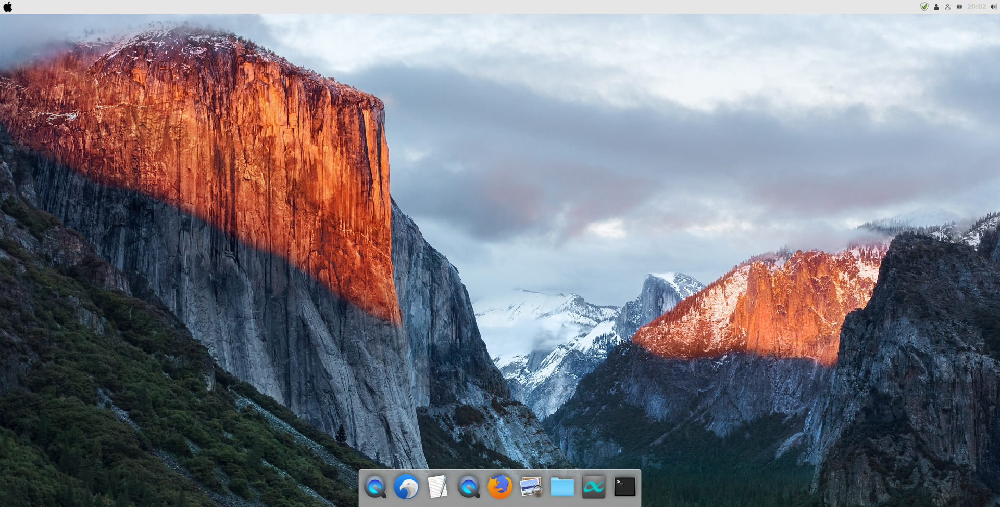
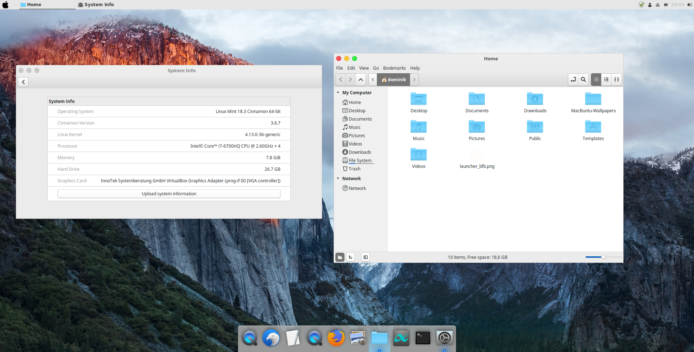

This script makes your Linux PC look like it is running macOS. There are different scripts for different Linux distributions. This script automates the tutorial from noobslab.com MacBuntu for Ubuntu 16.04 / Linux Mint 18.x
 